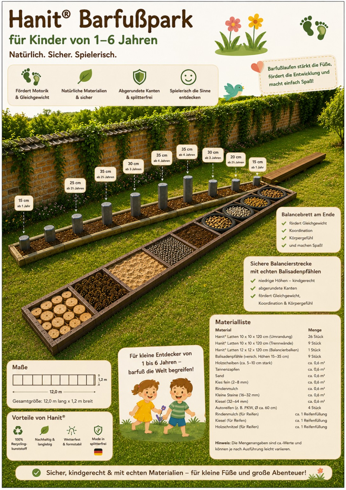
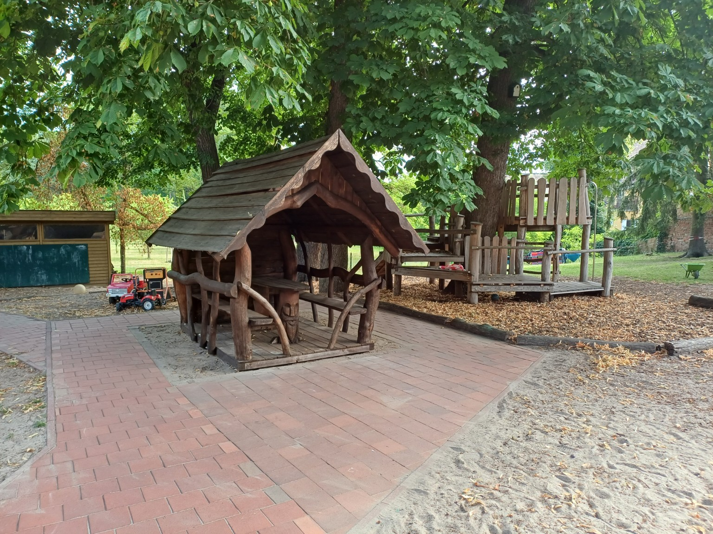

Barfußpark
Geplant ist ein etwa 12 Meter langer und 1,2 Meter breiter Sinnes- und Bewegungspfad für Kinder von 1 bis 6 Jahren. Verschiedene Naturmaterialien sollen Motorik, Gleichgewicht und Sinneswahrnehmung spielerisch fördern.

Wir machen aus guten Ideen konkrete Möglichkeiten für die Kinder.
Geplant ist ein etwa 12 Meter langer und 1,2 Meter breiter Sinnes- und Bewegungspfad für Kinder von 1 bis 6 Jahren. Verschiedene Naturmaterialien sollen Motorik, Gleichgewicht und Sinneswahrnehmung spielerisch fördern.

Neue Spielgeräte und Verbesserungen der Außenanlage sollen zusätzliche Bewegungs- und Spielmöglichkeiten schaffen.

Wir unterstützen Bildungsangebote, Ausflüge, Veranstaltungen und besondere Erlebnisse für die Kinder.